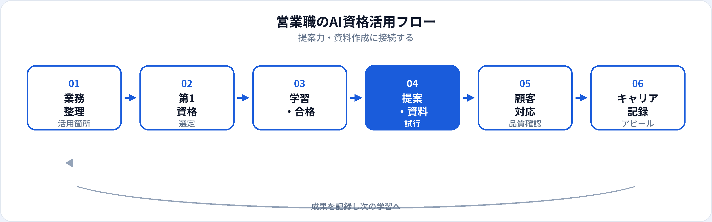

営業現場では、提案書のたたき台づくり、フォローメール、競合整理、商談準備の時間短縮に生成AIを使う場面が増えています。一方で、顧客情報の入力ミスやハルシネーション混じりの提案は、信頼を一瞬で損なうリスクもあります。本記事では、営業職が取るべきAI資格を比較し、提案力・資料作成への具体的な接続方法、転職・社内評価での活かし方を2026年6月時点で整理します。資格の全体像はAI資格はキャリアにどう役立つ？、非エンジニア向けの選び方は非エンジニア向けAI資格も参照してください。
営業職にAI資格が効く理由
営業に必要なのは「ツールを触れること」だけではなく、顧客に出せるアウトプットの品質と社内ルールを守った使い方です。資格学習は、感覚的なAI利用から再現可能な業務改善へ移るための土台になります。
提案スピードと質の両立
たたき台を速く作り、空いた時間を顧客理解・関係構築に回せる。出力のファクトチェック方法も体系的に学べる。
AI商材・DX提案の説得力
自社がAIサービスを扱う場合、基礎用語とリスク説明ができる営業は信頼を得やすい。
社内の「使える営業」の証明
資格＋業務改善実績は、AI推進チームへの参画や、新規案件アサインの材料になる。
試験対策はこちら
業務別：生成AIの活用シーン
営業のどの工程にAI資格の知識が効くかを、具体例で整理します。いずれも最終確認は人間が行う前提です。
| 業務 | 生成AIの使い方（例） | 資格で身につく関連知識 |
|---|---|---|
| 提案書・見積のたたき台 | 構成案、課題整理、競合との差分文案 | プロンプト設計、出力の検証、ハルシネーション対策 |
| 顧客メール・フォロー文 | トーン調整、要点の要約、多言語下書き | 著作権、トーン指定、人間による最終確認 |
| 商談準備・議事録 | 想定質問リスト、録音要約（社内ルール内） | 個人情報・機密の入力禁止、社内ガイドライン |
| 競合・市場整理 | 公開情報の要約、比較表の下書き | 情報源の確認、事実と推測の区別 |
| 社内報告・Forecast | 週次報告の骨子、失注理由の整理 | 数値の正確性確認（AIに計算を任せない） |
プロンプトの考え方はプロンプトエンジニアリング（学習ガイド）、リスクはAI倫理・ガイドラインで深掘りできます。
おすすめ資格の比較
営業職が検討しやすい資格を、営業業務への近さで比較しました。
| 資格 | 営業職との相性 | 学習時間目安 | 向いている営業 |
|---|---|---|---|
| 生成AIパスポート | ◎ 最も業務直結 | 20〜40時間 | 提案・資料・メール中心の法人営業、インサイドセールス |
| ITパスポート | ○ IT商材・SaaS営業の土台 | 40〜80時間 | IT用語に不安がある方、SaaS/クラウド商材を扱う方 |
| G検定 | ○ AI商材・DX推進向け | 80〜150時間 | AI/DXソリューション営業、社内推進リーダー志望 |
学習法の詳細は営業職・企画職のAI資格（学習ガイド）、3資格比較は初心者向け比較を参照。
第1候補と学習順
多くの営業職は、次の順序が現実的です。
-
第1：生成AIパスポート
提案・メール・議事録など、今の業務にすぐ接続できる。合格後1週間以内に、自分の案件で1つテンプレートを試す。
-
第2（任意）：ITパスポート
SaaS・セキュリティ・クラウド商材を扱う営業で、IT基礎に不安がある場合。生成AIパスポートの前後どちらでも可。
-
第3（任意）：G検定
AI商材の提案深度を上げたい、プリセールス・AI PMを視野に入れる場合。G検定のキャリア活かし方参照。
| あなたの営業スタイル | 第1候補 |
|---|---|
| 資料・メール作成に時間がかかる | 生成AIパスポート |
| AI/DXソリューションを提案している | 生成AIパスポート → G検定 |
| IT商材で専門用語が壁になっている | ITパスポート → 生成AIパスポート |
| 転職で「AI活用できる営業」をアピールしたい | 生成AIパスポート ＋ 改善実績の数値 |
営業職の活用フロー

合格後の実践（提案・資料・商談）
資格の効果を最大化するには、自分の案件で再現可能な型を1つ作ることです。
提案書テンプレート
「課題→打ち手→効果→次アクション」のプロンプトを固定。顧客固有情報は匿名化した例で練習し、本番は社内承認フローを通す。
フォローメール3パターン
初回接触・提案後・失注フォローの文案テンプレ。トーン（丁寧/カジュアル）を指定し、必ず人が最終編集。
商談前ブリーフ
公開情報＋社内メモ（機密除く）から想定質問10個を生成。回答は営業自身が準備し、AI出力をそのまま使わない。
改善効果は時間（分）・作成物数・受注率への間接寄与など、可能な範囲で数値化し、社内報告・転職の職務要約に使います。
営業現場の注意点
| やってよいこと（原則） | 避けるべきこと |
|---|---|
| 公開情報・自社テンプレの下書き支援 | 顧客名・契約条件・未公開数値の入力 |
| 構成案・文案のたたき台生成 | AI出力を検証なしで顧客に送付 |
| 社内ガイドラインに沿ったツール利用 | 私的アカウントへの機密データ投入 |
| 競合の公開情報の要約 | 根拠不明の数値・事例を提案書に記載 |
生成AIパスポートは、これらの判断基準を試験レベルで整理するのに向いています。社内規定が最優先であり、資格は社内ルールの理解を補強する位置づけです。
キャリア・転職でのアピール
現職（営業のまま）
職務経歴書に「生成AIパスポート（年月）」とセットで、提案書作成時間○%削減「月次○件のたたき台をテンプレ化」などを記載。社内のAI活用事例共有会への登壇も評価材料になります。
転職・キャリアチェンジ
営業経験は次の職種で強みになります。
- プリセールス・セールスエンジニア 顧客課題のヒアリング力 ＋ 生成AIパスポート ＋（AI商材なら）G検定
- カスタマーサクセス フォロー・提案力 ＋ 生成AIパスポート（FAQ・オンボーディング資料の効率化）
- AIプロダクトマネージャー 顧客の声の整理力 ＋ G検定/生成AIパスポート ＋ 企画実績（AI PM参照）
- プロンプトエンジニア（業務寄り） 現場のプロンプト設計 ＋ 生成AIパスポート ＋ 改善事例（プロンプトエンジニア参照）
履歴書の書き方はAI資格を履歴書に書く方法、資格の一般的な効き方はAI資格はキャリアにどう役立つ？を参照。
資格だけでは足りない点
営業の評価軸は売上・受注・顧客関係です。資格は「安全にAIを使える営業」であることの証明にはなりますが、受注実績そのものは置き換えません。合格後は必ず、自分のパイプラインで小さく試し、成果を記録してください。
よくある質問
生成AIパスポートだけで十分？
現職の業務改善が目的なら十分なことが多いです。プリセールス・AI PM等を視野に入れる場合はG検定も有効です。
顧客情報をAIに入力してよい？
社内規定と契約を確認し、原則として顧客名・未公開情報は入力しないでください。生成AIパスポートでリスクの基礎を学べます。
営業からAI関連職に転職できる？
可能です。ヒアリング力はプリセールス・CS・AI PMで強みになります。資格に加え業務改善の具体実績を用意すると説得力が増します。